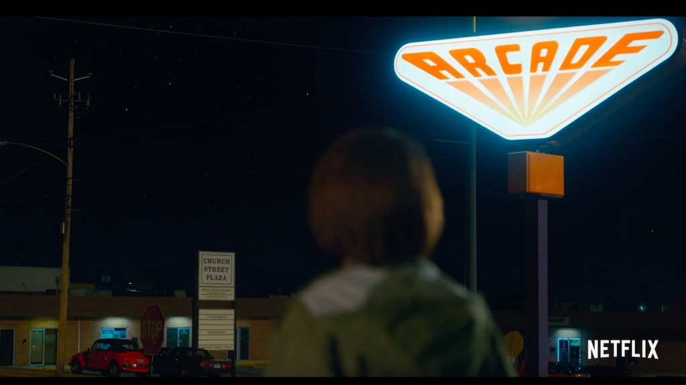

Дворец — зал игровых автоматов в Хоукинсе, где можно поиграть в различные игры, в том числе «Логово дракона», «Диг Даг», «Галака» и «Пакман», а также различные игры в жанре пинбол. Место работы Кита.
Главное место встречи Майка, Лукаса, Дастина и Уилла во втором сезоне. Название Palace, по словам самих братьев Дафферов, — отсылка к фильму «Военные игры» 1983 года, где была игровая галерея точно с таким же названием. Здесь Уилл видит одно из самых страшных видений — шторм на Обратной стороне, а ребята знакомятся с MADMAX, обогнавшей их в «Диг Даге» с 731 500 очками.
Пока они спорили с Китом, чтобы узнать настоящее имя игрока, Уилл неожиданно заметил, что на улице с неба летели хлопья. Обернувшись, чтобы сообщить о проишествии друзьям, он обнаружил что они пропали, а сам он оказался в Изнанке. Уилл лишь успел увидеть огромную алую бурю, которая приближалась к нему через город, прежде чем его окликнул Майк и мальчик вновь вернулся в реальность.